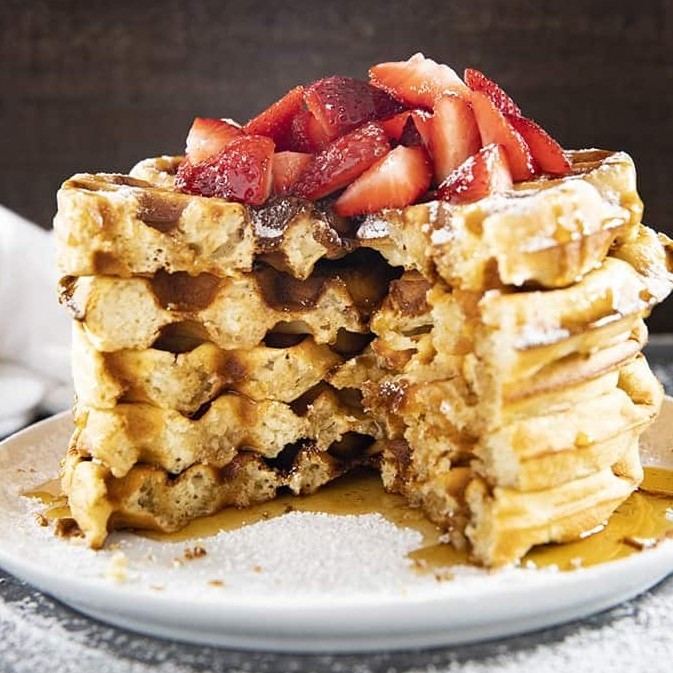

Belgian Waffles

Description
Belgian waffles are similar to classic waffles, except that they have deeper pockets due to being made in a Belgian Waffle Maker.
Because of the major texture difference, you cannot use pancake batter to make these waffles!
Ingredients
- 2 1/4 Cups All Purpose Flour
- 1 Tablespoon Baking Powder
- 3 Tablespoons Sugar
- 1/2 Teaspoon Salt
- 1 Teaspoon Cinnamon
- 2 Large Eggs
- 1/2 Cup Vegetable Oil
- 2 Cups Milk
- 1 Teaspoon Vanilla Extract
Instructions
- Preheat your waffle iron, spray with non stick cooking spray and set aside.
- In a large bowl whisk together the flour, baking powder, sugar, salt, and cinnamon.
- In a medium bowl beat the egg whites with a hand mixer until stiff peaks form. Set aside.
- In a separate medium bowl mix together the egg yolks, vegetable oil, milk, and vanilla extract.
- Add the egg yolk mixture to the dry ingredients and mix well.
- Fold in the egg whites.
- Pour the batter onto your hot waffle iron and cook according to manufacturer's directions**
- Serve immediately with butter, syrup, powdered sugar or any other favorite toppings.